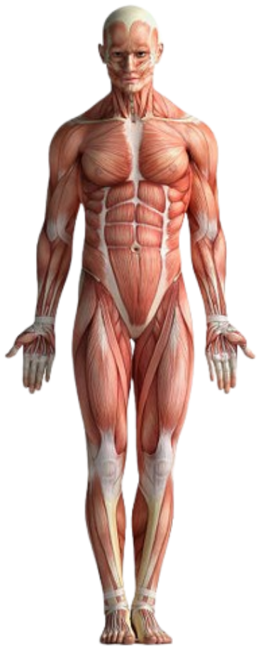

Part 1: The Arm
1. Functional Biomechanics: The Elbow Flexors
Understanding the arm requires looking at how muscles work in "synergy" rather than in isolation. While the Biceps Brachii is the most famous muscle of the arm, it is not the primary flexor in every position.
- The Brachialis: Known as the "workhorse" of the elbow. Because it inserts into the ulna (which does not rotate), it provides consistent power regardless of whether the hand is palm-up or palm-down.
- The Biceps Brachii: This is a "three-joint" muscle. It is most powerful when the forearm is supinated (palm up). In clinical practice, if a patient has a rupture of the biceps tendon, they can still bend their elbow using the Brachialis, but they will lose significant strength in forceful supination (like turning a screwdriver).
- The Brachioradialis: This muscle acts as a "shunting" muscle, providing stability during rapid movements. It is most active when the forearm is in a neutral (mid-prone) position; often called the "hammer curl" position.
2. Clinical Reasoning: Nerve vs. Muscle
A critical skill for any physical therapist is differentiating between a local tissue injury and a neurological deficit.
- Muscle Strain: Pain is usually localized to the muscle belly or tendon. It is provoked by "Active Contraction" (the patient moving) or "Passive Stretch" (the therapist moving the patient).
- Nerve Impingement: Pain often follows a "dermatome" (a specific track down the arm) and is accompanied by numbness, tingling, or weakness.
- The Radial Nerve & Wrist Drop: The Radial Nerve travels along the humerus in the "radial groove." A fracture of the mid-humerus can damage this nerve, leading to Wrist Drop. Always check if the patient can "hitchhike" (extend the thumb); if they can't, suspect a Radial Nerve issue.
3. Pathology Focus: Lateral Epicondylitis (Tennis Elbow)
Despite the name, this condition is rarely about inflammation (-itis) and more about tissue degeneration (-osis) due to repetitive micro-trauma.
- The Cause: Repetitive extension of the wrist, which puts excessive stress on the Extensor Carpi Radialis Brevis (ECRB) tendon where it attaches to the lateral epicondyle of the humerus.
- Patient History: Patients typically report a slow onset of pain on the outer side of the elbow. The pain worsens when gripping objects, shaking hands, or lifting a coffee cup.
- Clinical Test: Use Cozen's Test; ask the patient to make a fist, pronate the arm, and resist as you push their extended wrist downward. Sudden pain at the lateral epicondyle is a positive sign.



Sheet Code
Origin: Long head (supraglenoid tubercle), Short head (coracoid process).
Insertion: Radial tuberosity.
Action: Elbow flexion, forearm supination.
Innervation: Musculocutaneous nerve (C5, C6). Clinical Red Flags: Quick list of symptoms that require immediate medical attention (e.g., loss of pulse, severe swelling). Test Metrics: Normal Range of Motion (ROM) values for the elbow (e.g., 0 degree to 145 degree).
Insertion: Radial tuberosity.
Action: Elbow flexion, forearm supination.
Innervation: Musculocutaneous nerve (C5, C6). Clinical Red Flags: Quick list of symptoms that require immediate medical attention (e.g., loss of pulse, severe swelling). Test Metrics: Normal Range of Motion (ROM) values for the elbow (e.g., 0 degree to 145 degree).